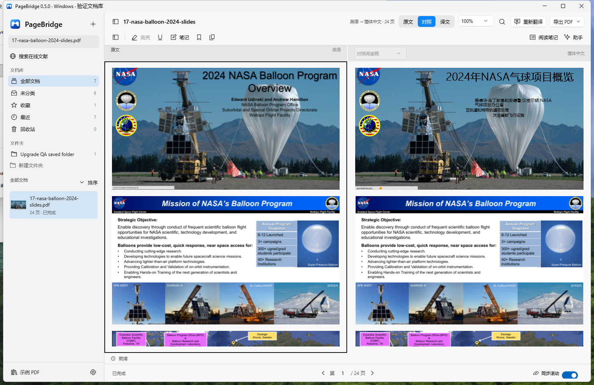
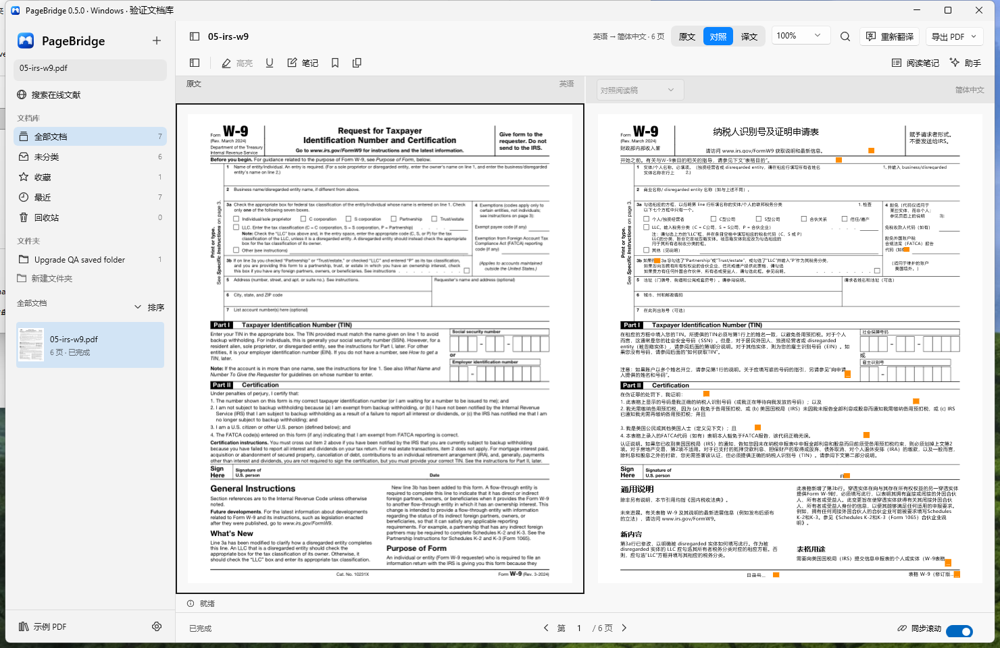

对照阅读
0.5 新增 · 默认方式
译文回到原段落区域，原文与译文的页顶、缩放和滚动保持一致。
- 尽量保留背景、色块、细边框和图表位置。
- 原生表格保留数字与格线，翻译文字标签；扫描表格保留原图并提供辅助译文。
- 已识别行内公式使用原页裁图；文字放不下时点击展开。
阅读稿暂不支持自身搜索、批注或 PDF 导出。
v0.5.0 2026-10-27 发布 macOS 14+ 与 Windows 11
在原文旁读译文，两边一起滚动。PageBridge 0.5 用 MinerU 在本机识别 PDF 与扫描页，把译文放回原段落的位置，尽量保留分栏、图片和表格。翻译使用你选择的 Ollama 或 OpenAI 兼容服务。

拖入 PDF 或点击 + 导入；也可以按标题、关键词或 DOI 检索 OpenAlex，下载全文后直接打开。
默认生成对照阅读稿，选择语言与页码，例如 1-5, 8。首次使用会下载识别组件；取消或整体失败会保留上次成功的阅读稿。
原文和译文按同一页对齐，双向同步滚动，也可关闭同步分别读。密集段落可以点击展开全文，失败的段落可单独重试。
在翻译窗口选择“重排 PDF”，生成可导出的译文或原译逐页交替的双语 PDF。对照阅读稿与重排 PDF 分开保存。
覆盖论文、财报、技术手册、表单、彩色幻灯片与扫描件。下面列的是修复后的真实结果，包括仍未解决的问题。点击文档标题可查看公开原件。
20 份原件共 746 页，实际测试 134 个不重复物理页：6 份全文共 87 页，14 份选页共 47 页。页码从 1 开始，按 PDF 物理页计算。
18 份处理完成，Adam 部分完成，阿语扫描不支持。这组结果说明原页对照阅读已经可用，但不能将“处理完成”当成翻译质量全部合格。
| 文档与类型 | 实际测试范围 | 处理结果 | 观察与剩余问题 |
|---|---|---|---|
| BERT: Pre-training of Deep Bidirectional Transformers for Language Understanding双栏论文 / 图表 / 公式 | 选测 5 / 16 页：1、3、5、11、16 | 处理完成 | 双栏、示意图、细框与数值列保持原区域，已识别行内公式正常显示。 未单独识别的上标/下标仍有扁平化或丢失；引用样式、换行和留白与原稿不同。 |
| Batch Normalization: Accelerating Deep Network Training by Reducing Internal Covariate Shift双栏论文 / 密集数学公式 | 选测 1 / 9 页：3 | 处理完成 | 第3页双栏、页眉横线和独立公式保留，21个已识别行内公式附件显示，无占位符泄漏。 一个Jacobian分式未识别成公式而被压平；数值稳定项epsilon符号仍丢失。 |
| Industry-Standard Dual Operational Amplifiers (LM358 family)芯片数据手册 / 参数表 | 选测 1 / 68 页：6 | 处理完成 | 第6页细表格线、灰色表头和MIN/TYP/MAX数值列保持原行列位置。 23处紧凑标签、条件或页脚需展开；工程符号En曾被误译成“恩”，需核对原文。 |
| Artificial Intelligence Risk Management Framework (AI RMF 1.0)英文报告 / 目录 / 表格 | 选测 2 / 48 页：4、28 | 处理完成 | 目录缩进和右侧页码对齐，表格细线、分行边界与标识编号保留。 部分原文断词残留，中英文片段混杂；MAP/GOVERN术语不统一，居中标题会偏左。 |
| Form W-9 (Rev. March 2024)空白官方表单 / 细边框 | 选测 1 / 6 页：1 | 处理完成 | 复选框、纳税人号码框、签名线和细边框保留；混色标题保留原图，可点击查看译文。 短字段说明、链接及日期/页脚等12处需展开；这不是可填写译文表单的验收。 |
| Analysis of the development of dynamic stall based on oscillating airfoil experiments历史扫描技术报告 | 选测 1 / 107 页：9 | 处理完成 | 所测第9页生成9个可读译文块，段落起点保持，无失败块或可见OCR乱码。 仅测1页；兼容文字画布使用较小固定字号，留白和标题居中改变，未复刻扫描纹理。 |
| AI Risk Management Framework - Japanese translation日文报告 / 彩色提示框 | 选测 1 / 52 页：7 | 处理完成 | 第7页浅青底色和圆角细边框连续完整，中文正文未碰到边框。 短译文增加留白，原页标签仍为日文，部分术语翻译较直译。 |
| Attention Is All You Need论文 / 公式 / 架构图 / 表格 | 全文 15 页（1–15） | 处理完成 | 全文生成；总览未见大面积图像擦除或数值列移位，抽查注意力图、公式和结果表保持原位置。 第9/10页表头有2处需展开；h、train、Transformer存在“小时/火车/变压器”等误译。 |
| RFC 8259 — The JavaScript Object Notation (JSON) Data Interchange Format技术规范 / 等宽代码 / ABNF | 全文 16 页（1–16） | 处理完成 | 全文生成；抽查目录点线、页码和JSON示例缩进保留，多数语法/代码块保持原文。 部分ABNF行被当作正文翻译，代码保留并不完整；Value标题有字面误译。 |
| USCIS Form I-9 — Employment Eligibility Verification空白官方表单 / 多栏字段 | 全文 4 页（1–4） | 处理完成 | 全文4页生成；复选框、空白输入框、灰表头和签名区保留，混色说明保留原文并可点开译文。 部分说明有未译片段或分离的引用数字，6处短标签/页脚需展开。 |
| Adam: A Method for Stochastic Optimization论文 / 密集行内公式 / 算法 | 全文 15 页（1–15） | 部分完成 | 15页已生成并重开；公式、算法框和图表的原位置保留，已识别公式附件显示。 第14页1个含7个公式的段落重试后仍保留原文；参考文献及短图注等23处需展开。 |
| Deep Residual Learning for Image Recognition双栏论文 / 网络图 / 数值表 | 全文 12 页（1–12） | 处理完成 | 全文12页生成；双栏、网络图、曲线及数值列保留，普通正文没有记录到区域溢出。 99处需展开：48处表格、46处参考文献、5处图注/脚注，密集区域不能只看页内缩略译文。 |
| Denoising Diffusion Probabilistic Models论文 / 密集公式 / 彩色图像 | 全文 25 页（1–25） | 处理完成 | 全文25页生成；总览图像区域保留，原尺寸抽查公式分式线、公式编号和结果表数值位置稳定。 共8处表头/图注等需展开；第5页objective断词后的tive残留，译文未做逐字专业审校。 |
| 人工智能发展报告（2024年）中文报告译英文 / 水印 / 表格 | 选测 5 / 64 页：13、18、21、22、28 | 处理完成 | 5个选页的斜水印、架构图和表格细线保留，未见白块覆盖图片或跨栏正文。 英文膨胀使多处表头、单元格、标题与脚注截断，需点击展开；图内中文保持原图。 |
| Les batteries au lithium — Connaître et prévenir les risques (ED 6407)法语手册 / 照片 / 装饰 / 表格 | 选测 5 / 24 页：8、12、14、19、20 | 处理完成 | 照片、灰底、彩色装饰、细表框与危险品编号保留；混色标题保留原图并可展开中文。 第14页“12+三角”被识别并译为“12吨”；部分图内法文保留，短表格片段语序生硬。 |
| Berkshire Hathaway Inc. 2024 Annual Report财务年报 / 多列数字 / 灰底表格 | 选测 5 / 150 页：88、89、113、117、124 | 处理完成 | 5页灰条纹、细线和财务数值列保留；516个数值区域核对未改变原数字，邻近标题未被擦除。 1个IBNR标题需展开；Goodwill、ALAE、Development等金融术语仍有误译或不一致。 |
| 2024 NASA Balloon Program Overview彩色横版幻灯片 / 照片背景 | 选测 5 / 24 页：1、5、6、8、18 | 处理完成 | 照片背景、Logo、彩色填充、细网格及数值位置保留，标题阴影覆盖问题已修复。 封面小页脚需展开，专业词/缩写仍需核对；6个数字字框边沿有差异，但数字笔画未被遮盖。 |
| LM5160A, LM5160 Buck EVM User's Guide (Rev. B), SNVU441B工程手册 / 原理图 / PCB | 选测 5 / 15 页：4、5、6、7、8 | 处理完成 | PCB图、原理图、曲线、Logo、细表格线与已识别公式图像保留。 26处小图注/页脚等需展开；文字变化后，原链接下划线可能仍停留在原坐标。 |
| US 8,108,023 B2 — Blood Monitoring Systems and Methods Thereof扫描专利 / 双栏 / 旋转线稿 | 选测 5 / 14 页：1、5、6、11、12 | 处理完成 | 条码经逐像素复核完整，剖面图、细线、箭头和双栏正文区域保留。 第1页专利引用列合并成段落，第6页旋转图注方向/内容错误；部分编号、日期需展开。 |
| UNICEF 儿童权利与义务（阿拉伯语图文手册）阿拉伯语 / 扫描或轮廓字 / 插画 | 选测 5 / 62 页：7、9、12、38、46 | 不支持，保留原页 | 所选5页明确保留原页，彩色背景、插画与边框完整，没有错误OCR译文叠印。 当前MinerU Basic/ONNX不支持无阿语文本层的扫描页；本例没有生成中文译文。 |
测试环境：MinerU 4.0.12 Basic / ONNX CPU + DeepSeek deepseek-flash，2026-10-27。全部 134 页已重新打开，原 PDF 哈希均未变。视觉复查包含总览和原尺寸抽查，不等于逐字专业审校。
这组 20 份的排版回归使用 Mac 生产画布。Windows 另选论文、财报、彩色幻灯片、表单、法语手册与扫描稿各 1 页实测，共 6 页；同时完成首次安装与升级验收。
公开原件可能随来源更新；这里的页数与结论对应本次留存版本。完整清单包含原件哈希与每份的视觉抽查范围。
在同一个工作区管理文档、查找文献和向助手提问。原文与重排 PDF 还支持文字搜索、批注和笔记。
在原文或重排 PDF 中选中文字，即可高亮、加下划线或写笔记，也可以添加页笔记和书签。笔记面板按页列出批注，点击回到原处。对照阅读稿暂不支持自身批注。

在阅读时向文档提问，助手使用你已配置的模型，可以和翻译用不同的模型。回答里的 [P3] 引用能展开，核对当次实际交给模型的原文片段，并跳回对应页面。
助手每次只看到有限的片段，不代表模型通读了全文；引用只说明该页片段被提供过，结论仍需对照原文。

用标题、关键词或 DOI 检索 OpenAlex，选择全文来源后直接下载到文档库。下载会先校验文件；与库里已有的文档相同时，直接打开原来那份，保留译文和笔记。

两个版本共用同一套翻译引擎，界面分别用各自平台的原生框架编写，功能基本一致。
两端文档库格式不同，暂不支持直接互拷数据目录或跨平台同步。尚无 Intel Mac 和原生 Windows ARM64 版本。
Windows 版功能与已知差异
文档解析与排版都在本机完成。只有你调用在线服务时，相应的内容才会发出去。
安装包自带基础运行环境，无需另装 Python。首次使用对照阅读时会下载独立的识别环境与模型，请联网并预留约 4 GB 空间；模型权重不包含在安装包内。
适合这台设备
解压后把 PageBridge.app 拖入“应用程序”。需要 macOS 14 或更新。
适合这台设备
按向导选择目录和快捷方式，默认装到当前用户目录。卸载会保留文档库、配置和系统凭据。
适合这台设备
完整解压后运行 PageBridge.Windows.exe，保留所有子目录。应用内更新会启动安装向导，不会就地替换便携目录。
Mac 包目前为 ad-hoc 签名，尚未经过 Developer ID 签名和 Apple 公证；Windows 安装器和程序尚无 Authenticode 签名。请核对下载来源和 SHA-256，再按系统提示确认打开。Windows 应用内的网页验证需要系统 WebView2 Runtime。